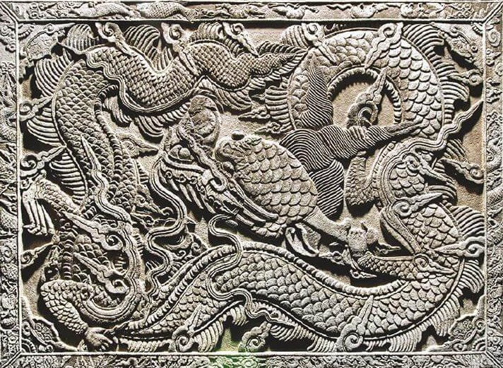

CỐ ĐÔ HOA LƯ
딘 왕 사당 뜰의 용상

17세기에 조성된 돌 소재의 용상으로, 2017년 국무총리의 서명 결정으로 국보로 인정받았습니다.
이 용상은 왕의 침대가 아니라 제물을 준비하거나 장엄하게 제물을 진설하기 위한 기능의 신성한 제사 도구입니다.
장인들은 최고의 조각 솜씨로 투박한 돌덩이에 영혼을 불어넣어 완벽한 기술적 연출 수준에 도달한 예술 작품으로 탈바꿈시켰습니다. 용상의 중심에는 통통한 몸집에 홑비늘과 칼날 모양의 불꽃 무늬(đao mác lá hỏa)를 가진 거대한 신령한 용의 모습이 자리 잡고 있습니다. 이곳의 용 형상은 최고의 왕권을 상징할 뿐만 아니라, 비바람이 순조롭고 풍년이 들기를 기원하는 깊은 영적 의미도 지니고 있습니다.

용상 둘레에는 소용돌이 구름을 향해 마주 보는 두 마리 용, 물고기와 새우 등 물가의 삶과 밀접한 정교한 조각 문양들이 둘러싸고 있습니다. 이 보물의 가장 독특하고 차별화된 하이라이트는 다분히 의인화된 양식화에 있습니다. 전통적인 날카로운 발톱 사이사이에 장인은 살아 숨 쉬는 듯한 사람의 손 모양을 교묘하게 조각해 넣었습니다. 위엄 있는 자태를 만들기 위해 용상 양쪽에 장인은 말안장 형태를 띤 두 마리의 마주 보는 용을 조각했습니다. 이러한 결합은 용상에 안락의자 형태를 부여하여 엄숙함과 경건함을 더해줍니다.

이 용상은 연구자들로부터 베트남 제단(sập thờ) 조각 예술에서 유일무이하고 가장 대표적인 유물로 평가받고 있습니다. 돌에 새겨진 조각 선 하나하나는 생동감 넘치는 자연의 그림을 묘사할 뿐만 아니라, 풍요로운 삶과 만물의 번성에 대한 인간의 갈망을 담고 있습니다.